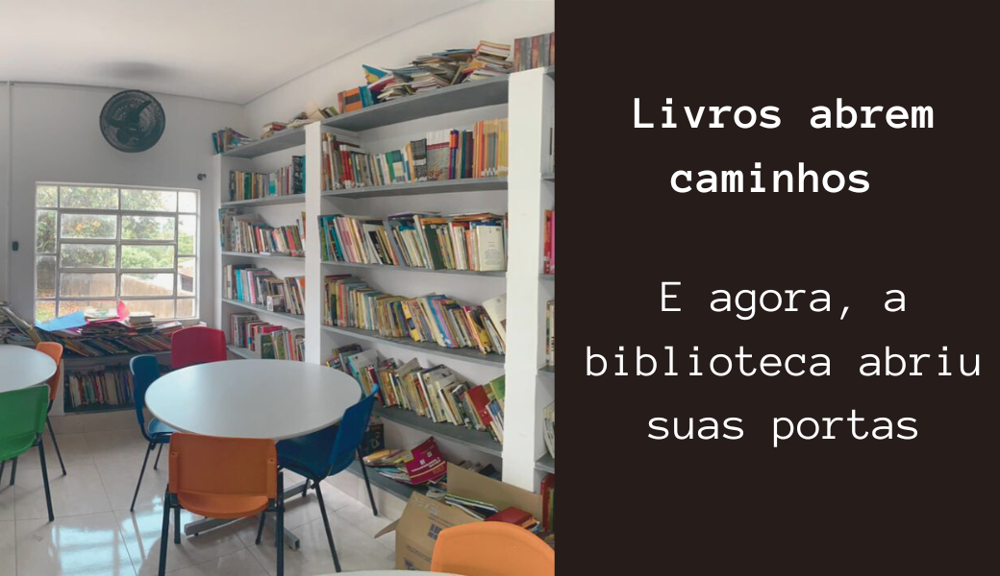

Inicialmente, como uma escola regular apenas para ensino médio a E.E. Dr. Eloy de Miranda Chaves, localizada na rua Areias no bairro Vila Aparecida, no município de Jundiaí, é atualmente um instituto de educação voltado ao Ensino Fundamental II.
Há muito tempo ela era aberta todos os dias, mas por falta de funcionários para mante-lá, ela teve que ser fechada, e agora, depois de um período, com a proposta de um professor e a colaboração dos alunos, finalmente poderá ser utilizada novamente.
Hilda Maria Alves Pachoalotto, trabalhou na EEPG “Dr. Eloy de Miranda Chaves” de 1964 a 1973. Formou-se professora primária em 1965, no instituto experimental de educação da cidade de Jundiaí, trabalhou como recenseadora em 1970 e em 1971 cursou letras na Faculdade de Ciências e Letras em Itatiba, no mesmo ano prestou concurso para professora de pré-escola e sendo admitida no serviço público de Jundiaí. Prestou serviços no Projeto Rondon em 1970 em Tarabai. EM Abril de 1996 aposentou-se na EEPG Dr. Eloy de Miranda Chaves, dando assim , em sua homenagem o nome da biblioteca da instituição.